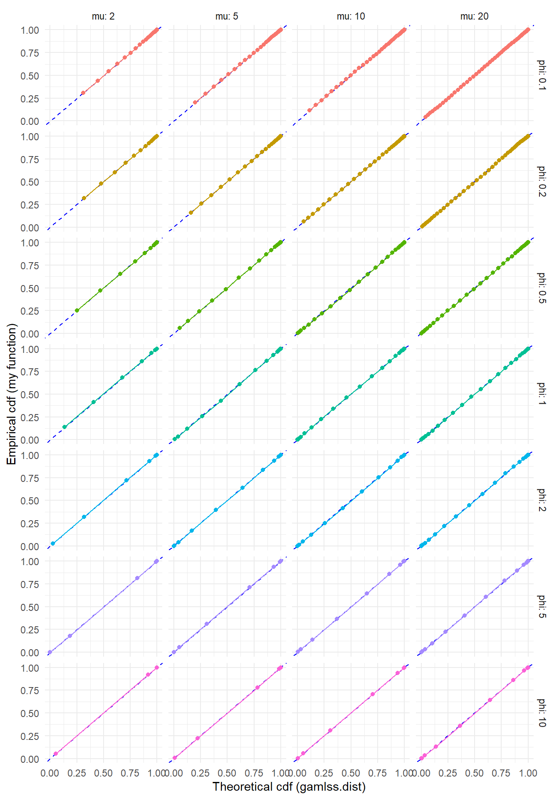
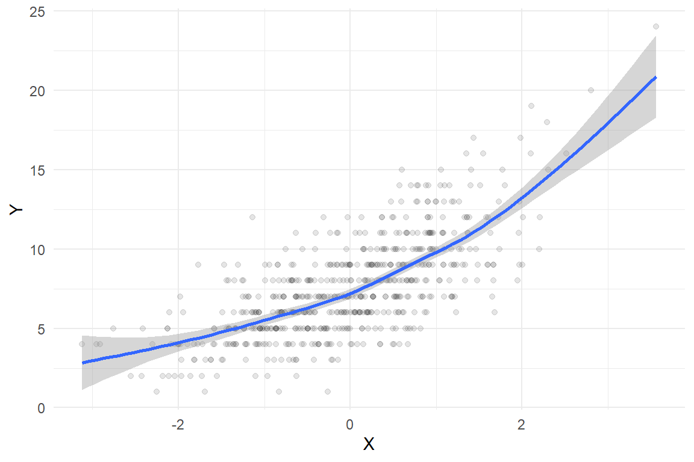
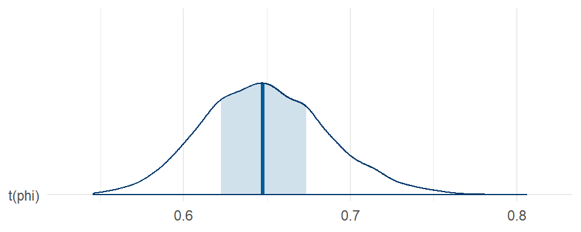
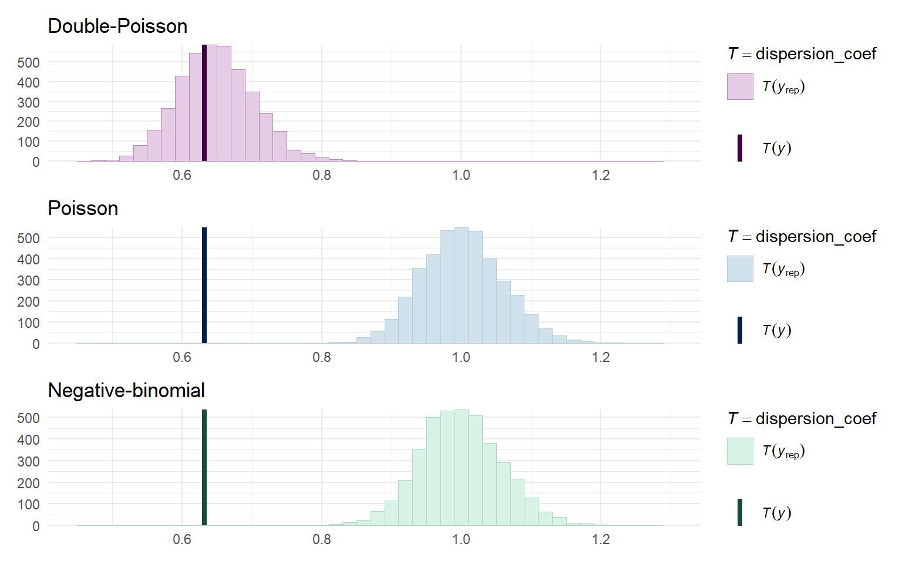

For a project I am working on, we are using Stan to fit generalized random effects location-scale models to a bunch of count data. We’re interested in using the double-Poisson distribution, as described by Efron (1986). This is an interesting distribution because it admits for both over- and under-dispersion relative to the Poisson distribution, whereas most of the conventional alternatives such as the negative binomial distribution or Poisson-normal mixture distribution allow only for over-dispersion. The double-Poisson distribution is not implemented in Stan, so we’ve had to write our own distribution function. That’s fine and not particularly difficult. What’s a bit more of a challenge is writing Stan functions to generate random samples from the double-Poisson, so that we can generate posterior predictive checks.1 In this post, I’ll walk through the implementation of the custom distribution functions needed to use the double-Poisson in Stan. The gamlss.dist package provides a full set of distributional functions for the double-Poisson distribution, including a sampler. Thus, I can validate my Stan functions against the functions from gamlss.dist.2
Code
library(tidyverse)library(patchwork) # composing figureslibrary(gamlss.dist) # DPO distribution functionslibrary(rstan) # Stan interface to Rlibrary(brms) # fitting generalized linear modelslibrary(bayesplot) # Examine fitted modelslibrary(loo) # Model fit measures
The double-Poisson
The double-Poisson distribution is a discrete distribution for non-negative counts, with support \(\mathcal{S}_X = \{0, 1, 2, 3, ...\}\). The mean-variance relationship of the double-Poisson is approximately constant; for \(X \sim DPO(\mu, \phi)\), \(\text{E}(X) \approx \mu\) and \(\text{Var}(X) \approx \mu / \phi\), so that the double-Poisson distribution approximately satisfies the assumptions of a quasi-Poisson generalized linear model (although not quite exactly so).
Efron (1986) gives the following expression for the density of the double-Poisson distribution with mean \(\mu\) and inverse-disperson \(\phi\): \[
f(x | \mu, \phi) = \frac{\phi^{1/2} e^{-\phi \mu}}{c(\mu,\phi)} \left(\frac{e^{-x} x^x}{x!}\right) \left(\frac{e \mu}{x}\right)^{\phi x},
\] where \(c(\mu,\phi)\) is a scaling constant to ensure that the density sums to one, which is closely approximated by \[
c(\mu, \phi) \approx 1 + \frac{1 - \phi}{12 \mu \phi}\left(1 + \frac{1}{\mu \phi}\right).
\] We then have \[
\ln f(x | \mu, \phi) = \frac{1}{2} \ln \phi - \phi \mu - \ln c(\mu, \phi) + x (\phi + \phi \ln \mu - 1) + (1 - \phi) x \ln(x) - \ln \left(x!\right),
\] where \(0 \times \ln (0)\) is evaluated as 0.
Log of the probability mass function
For purposes of using this distribution in Stan, it’s sufficient to provide the log of the probability mass function up to a constant—there’s no need to normalize it to sum to one. Thus, we can ignore the \(c(\mu, \phi)\) term above. Here’s a Stan function implementing the lpmf:
Code
stancode_lpmf <-"real dpo_lpmf(int X, real mu, real phi) { real ans; real A = inv(2) * log(phi) - phi * mu; if (X == 0) ans = A; else ans = A + X * (phi * (1 + log(mu)) - 1) - lgamma(X + 1) + (1 - phi) * X * log(X); return ans;}"
To check that this is accurate, I’ll compare the Stan function to the corresponding function from gamlss.dist for a couple of different parameter values and for \(x = 0,...,100\). If my function is accurate, the calculated log-probabilities should differ by a constant value for each set of parameters.
I’ll next implement a function to evaluate the cumulative distriution function over a range of values. This is an expensive calculation, but it can be improved a little bit by noting the relationship between sequential values of the probability mass function. Letting \(d = \exp \left(\phi + \phi \ln \mu - 1 \right)\), observe that \[
\begin{aligned}
f(0 | \mu, \phi) &= \frac{\phi^{1/2} e^{-\phi \mu}}{c(\mu,\phi)} \\
f(1 | \mu, \phi) &= f(0 | \mu, \phi) \times d \\
f(x | \mu, \phi) &= f(x - 1 | \mu, \phi) \times d \times \frac{\exp\left[(1 - \phi)(x - 1)\left(\ln(x) - \ln(x - 1)\right) \right]}{x^\phi}
\end{aligned}
\] where the last expression holds for \(x \geq 2\).
The function below computes the cumulative distribution function over the range \(x = 0,...,m\) as follows:
Compute \(f(x | \mu, \phi)\) for \(x = 0,1,2,...\), without the scaling constant \(c(\mu, \phi)\)
Check if \(f(x | \mu, \phi) / F(x | \mu, \phi)\) is small (less than \(10^{-8}\)), in which case accumulation stops at the value \(n\).
The normalized cumulative distribution function will then be \(F(x | \mu, \phi) / F(n | \mu, \phi)\).
Code
stancode_cdf <-" vector dpo_cdf_vec(real mu, real phi, int maxval) { real d = exp(phi * (1 + log(mu)) - 1); real prob; int n = maxval + 1; vector[n] cdf; cdf[1] = sqrt(phi) * exp(-mu * phi); prob = cdf[1] * d; cdf[2] = cdf[1] + prob; for (i in 2:maxval) { prob = prob * d * exp((1 - phi) * (i - 1) * (log(i) - log(i - 1))) / (i^phi); cdf[i + 1] = cdf[i] + prob; if (prob / cdf[i + 1] < 1e-8) { n = i + 1; break; } } return cdf / cdf[n];}"
To check that this is accurate, I’ll again compare the Stan function to the corresponding function from gamlss.dist. If my function is accurate, the computed cdf values should be proportional to the cdf calculated from gamlss.dist::pDPO() and the ratio should be very close to 1.
Still on track here (although you might wonder—would I be sharing this post if I couldn’t get the function working?).
Quantile function and sampler
The main other thing we need is a function for generating random samples from the double-Poisson. The gamlss.dist package has the function rDPO() for this purpose. It’s implemented using the standard inversion method, by calculating quantiles of the double-Poisson corresponding to a random sample from a uniform distribution. Just for funzies, I’ll implement the same approach using Stan.
The function below calculates quantiles by finding the minimum value of \(q \geq 0\) such that \(F(q + 1 | \mu, \phi) \geq p\) for a specified probability \(p \in [0, 1]\). It is vectorized over \(p\) and solves for \(q\) by starting with the smallest \(p\) and continuing through the largest value.
Code
stancode_quantile <-" vector dpo_cdf_vec(real mu, real phi, int maxval) { real d = exp(phi * (1 + log(mu)) - 1); real prob; int n = maxval + 1; vector[n] cdf; cdf[1] = sqrt(phi) * exp(-mu * phi); prob = cdf[1] * d; cdf[2] = cdf[1] + prob; for (i in 2:maxval) { prob = prob * d * exp((1 - phi) * (i - 1) * (log(i) - log(i - 1))) / (i^phi); cdf[i + 1] = cdf[i] + prob; if (prob / cdf[i + 1] < 1e-8) { n = i + 1; break; } } return cdf / cdf[n];}array[] int dpo_quantiles(vector p, real mu, real phi, int maxval) { int N = rows(p); array[N] int qs; array[N] int indices = sort_indices_asc(p); vector[maxval + 1] cdf_vec = dpo_cdf_vec(mu, phi, maxval); int j = 0; for (i in indices) { while (cdf_vec[j + 1] < p[i]) { j += 1; } qs[i] = j; } return qs;}"
If my quantile function is accurate, it should match the value computed from gamlss.dist::qDPO() exactly.
The last piece of the puzzle is to write a sampler by generating random points from a uniform distribution, then computing the double-Poisson quantiles of these random points. I will implement this two ways: first with an argument for the number of random variates to generate and then, more simply, to generate a single random variate.3
Code
stancode_qr <-"real dpo_lpmf(int X, real mu, real phi) { real ans; real A = inv(2) * log(phi) - phi * mu; if (X == 0) ans = A; else ans = A + X * (phi * (1 + log(mu)) - 1) - lgamma(X + 1) + (1 - phi) * X * log(X); return ans;}vector dpo_cdf_vec(real mu, real phi, int maxval) { real d = exp(phi * (1 + log(mu)) - 1); real prob; int n = maxval + 1; vector[n] cdf; cdf[1] = sqrt(phi) * exp(-mu * phi); prob = cdf[1] * d; cdf[2] = cdf[1] + prob; for (i in 2:maxval) { prob = prob * d * exp((1 - phi) * (i - 1) * (log(i) - log(i - 1))) / (i^phi); cdf[i + 1] = cdf[i] + prob; if (prob / cdf[i + 1] < 1e-8) { n = i + 1; break; } } return cdf / cdf[n];}array[] int dpo_quantiles(vector p, real mu, real phi, int maxval) { int N = rows(p); array[N] int qs; array[N] int indices = sort_indices_asc(p); vector[maxval + 1] cdf_vec = dpo_cdf_vec(mu, phi, maxval); int j = 0; for (i in indices) { while (cdf_vec[j + 1] < p[i]) { j += 1; } qs[i] = j; } return qs;}array[] int dpo_sample_rng(int n, real mu, real phi, int maxval) { vector[n] p; for (i in 1:n) { p[i] = uniform_rng(0,1); } array[n] int x = dpo_quantiles(p, mu, phi, maxval); return x;}int dpo_quantile(real p, real mu, real phi, int maxval) { vector[maxval + 1] cdf_vec = dpo_cdf_vec(mu, phi, maxval); int q = 0; while (cdf_vec[q + 1] < p) { q += 1; } return q;}int dpo_rng(real mu, real phi, int maxval) { real p = uniform_rng(0,1); int x = dpo_quantile(p, mu, phi, maxval); return x;}"
To check this function, I’ll generate some large samples from the double-Poisson with a few different parameter sets. If the sampler is working properly, the empirical cumulative distribution should line up closely with the cumulative distribution computed using gamlss.dist::pDPO().
ggplot(test_rng, aes(gamlss_F, Freq_cum, color =factor(phi))) +geom_abline(slope =1, color ="blue", linetype ="dashed") +geom_point() +geom_line() +facet_grid(phi ~ mu, labeller ="label_both") +theme_minimal() +labs(x ="Theoretical cdf (gamlss.dist)", y ="Empirical cdf (my function)") +theme(legend.position ="none")

Looks pretty good, no?
Using the custom distribution functions
To finish out my tests of these functions, let me demonstrate their use in an actual estimation problem. I’ll generate data based on a simple generalized linear model with a single predictor \(X\), where the outcome \(Y\) follows a double-Poisson distribution conditional on \(X\). The data-generating process is:
\[
\begin{aligned}
X &\sim N(0, 1) \\
Y|X &\sim DPO(\mu(X), \phi) \\
\log \mu(X) &= 2 + 0.3 \times X
\end{aligned}
\] To make things interesting, I’ll set the dispersion parameter to \(1 / \phi = 0.6\) so that the outcome is under-dispersed relative to the Poisson.
The following code generates a large sample from the data-generating process. To keep things R-centric, I use gamlss.dist::rDPO to generate the outcome.
Code
set.seed(20230913)N <-600X <-rnorm(N)mu <-exp(2+0.3* X)phi_inv <-0.6Y <-rDPO(N, mu = mu, sigma = phi_inv)dat <-data.frame(X = X, Y = Y)
Here’s what the sample looks like, along with a smoothed regression estimated using a basic cubic spline:
Code
ggplot(dat, aes(X, Y)) +geom_point(alpha =0.1) +geom_smooth(method ='gam', formula = y ~s(x, bs ="cs")) +theme_minimal()

Comparison models
Before using the custom distribution, I’ll fit a couple of out-of-the-box models that are useful points of comparison. Surely the simplest, quickest, and dirtiest way to estimate such a regression is with a generalized linear model, using the “quasi-Poisson” family to allow for non-unit dispersion. In R:
Code
quasi_fit <-glm(Y ~ X, family =quasipoisson(link ="log"), data = dat)summary(quasi_fit)
Call:
glm(formula = Y ~ X, family = quasipoisson(link = "log"), data = dat)
Coefficients:
Estimate Std. Error t value Pr(>|t|)
(Intercept) 1.98784 0.01219 163.03 <2e-16 ***
X 0.29276 0.01178 24.85 <2e-16 ***
---
Signif. codes: 0 '***' 0.001 '**' 0.01 '*' 0.05 '.' 0.1 ' ' 1
(Dispersion parameter for quasipoisson family taken to be 0.6324771)
Null deviance: 777.74 on 599 degrees of freedom
Residual deviance: 384.90 on 598 degrees of freedom
AIC: NA
Number of Fisher Scoring iterations: 4
This approach recovers the data-generating parameters quite well, with a dispersion estimate of 0.632 compared to the true dispersion parameter of 0.6.
Now let me fit the same generalized linear model but assuming that the outcome follows a true Poisson distribution (with unit dispersion). I’ll fit the model in a Bayesian framework with the brms package.
Code
Poisson_fit <-brm( Y ~ X, family =poisson(link ="log"),data = dat, warmup =500, iter =1500, chains =4, cores =4,seed =20230913 )summary(Poisson_fit)
Family: poisson
Links: mu = log
Formula: Y ~ X
Data: dat (Number of observations: 600)
Draws: 4 chains, each with iter = 1500; warmup = 500; thin = 1;
total post-warmup draws = 4000
Regression Coefficients:
Estimate Est.Error l-95% CI u-95% CI Rhat Bulk_ESS Tail_ESS
Intercept 1.99 0.02 1.96 2.02 1.00 2865 2658
X 0.29 0.01 0.26 0.32 1.00 2552 2381
Draws were sampled using sampling(NUTS). For each parameter, Bulk_ESS
and Tail_ESS are effective sample size measures, and Rhat is the potential
scale reduction factor on split chains (at convergence, Rhat = 1).
This specification recovers the intercept and slope parameters well too, but doesn’t provide any estimate of dispersion.
As an alternative, I’ll also fit the model using the negative binomial distribution, which is a generalization of the Poisson that allows for over-dispersion (but not under-dispersion):
Code
negbin_fit <-brm( Y ~ X, family =negbinomial(link ="log"),data = dat, warmup =500, iter =1500, chains =4, cores =4,seed =20230913 )summary(negbin_fit)
Family: negbinomial
Links: mu = log; shape = identity
Formula: Y ~ X
Data: dat (Number of observations: 600)
Draws: 4 chains, each with iter = 1500; warmup = 500; thin = 1;
total post-warmup draws = 4000
Regression Coefficients:
Estimate Est.Error l-95% CI u-95% CI Rhat Bulk_ESS Tail_ESS
Intercept 1.98 0.01 1.96 1.99 8.46 4 4
X 0.31 0.03 0.29 0.36 11.39 4 NA
Further Distributional Parameters:
Estimate
shape 288635341964439312984004668864260822628440088608000200668088264284802644482664682404200862480406040224646204882688664.00
Est.Error
shape 499993580246645223926226042864464406466686242028244246282864888460026284662046208044222402820440664060080422624068464.00
l-95% CI
shape 12948941308882.21
u-95% CI
shape 1154541367857757248926006442246840288482660022402000800442022846826208466628446428606800248620604060886464806228422446.00
Rhat Bulk_ESS Tail_ESS
shape Inf 4 NA
Draws were sampled using sampling(NUTS). For each parameter, Bulk_ESS
and Tail_ESS are effective sample size measures, and Rhat is the potential
scale reduction factor on split chains (at convergence, Rhat = 1).
The brms package implements the negative binomial using the rate parameterization, so the shape parameter corresponds to the inverse dispersion. Thus, a large shape parameter (as in the above fit) implies dispersion that is very close to one (i.e., close to the Poisson).
Double-Poisson model
Now I’ll fit the same model as previously but using my custom-built double-Poisson distribution. Following Paul Buerkner’s vignette on using custom distributions in brms, I’ll first specify the custom family object for the double-Poisson:
I set the defaults to use a log-link for the mean (just as with the Poisson and negative binomial families) and a log-link for the inverse-dispersion. Next, I’ll create an object to add the custom stan code from above into the code created by brm for fitting the model:
I’ll also need to specify a prior to use for the \(\phi\) parameter of the double-Poisson distribution:
Code
phi_prior <-prior(exponential(1), class ="phi")
Now I’m ready to fit the model:
Code
DPO_fit <-brm( Y ~ X, family = double_Poisson,prior = phi_prior,stanvars = double_Poisson_stanvars,data = dat, warmup =500, iter =1500, chains =4, cores =4,seed =20230913 )summary(DPO_fit)
Family: dpo
Links: mu = log; phi = identity
Formula: Y ~ X
Data: dat (Number of observations: 600)
Draws: 4 chains, each with iter = 1500; warmup = 500; thin = 1;
total post-warmup draws = 4000
Regression Coefficients:
Estimate Est.Error l-95% CI u-95% CI Rhat Bulk_ESS Tail_ESS
Intercept 1.99 0.01 1.96 2.01 1.00 3592 2849
X 0.29 0.01 0.27 0.32 1.00 3330 3103
Further Distributional Parameters:
Estimate Est.Error l-95% CI u-95% CI Rhat Bulk_ESS Tail_ESS
phi 1.55 0.09 1.38 1.72 1.00 3043 2560
Draws were sampled using sampling(NUTS). For each parameter, Bulk_ESS
and Tail_ESS are effective sample size measures, and Rhat is the potential
scale reduction factor on split chains (at convergence, Rhat = 1).
The regression coefficient estimates are basically identical to those from the Poisson and negative-binomial models, estimated with slightly better precision than with the Poisson or negative binomial families. However, we get a posterior for \(\phi\) that corresponds to under-dispersion. Here’s the posterior for the dispersion (i.e., \(1 / \phi\)):
Code
mcmc_areas(DPO_fit, pars ="phi", transformations = \(x) 1/ x) +theme_minimal()

Model comparison
I’d like to get a sense of how much better the double-Poisson model does with capturing the real data-generating process compared to the simple Poisson model or the negative binomial model. There’s a wide range of diagnostics that can inform such comparisons. I’ll consider the leave-one-out information criteria (LOOIC) and also look at some posterior predictive checks.
To calculate LOOIC for the double-Poisson model, I first need to provide a log_lik function that brms can use4. Here’s code, using the Stan function from above:
Code
expose_functions(DPO_fit, vectorize =TRUE)log_lik_dpo <-function(i, prep) { mu <- brms::get_dpar(prep, "mu", i = i) phi <- brms::get_dpar(prep, "phi", i = i) y <- prep$data$Y[i]dpo_lpmf(y, mu, phi)}
I can then compute LOOIC for all three models:
Code
loo(DPO_fit, Poisson_fit, negbin_fit)
Output of model 'DPO_fit':
Computed from 4000 by 600 log-likelihood matrix.
Estimate SE
elpd_loo -1305.7 16.9
p_loo 2.9 0.2
looic 2611.4 33.7
------
MCSE of elpd_loo is 0.0.
MCSE and ESS estimates assume MCMC draws (r_eff in [0.7, 1.3]).
All Pareto k estimates are good (k < 0.7).
See help('pareto-k-diagnostic') for details.
Output of model 'Poisson_fit':
Computed from 4000 by 600 log-likelihood matrix.
Estimate SE
elpd_loo -1330.0 11.3
p_loo 1.3 0.1
looic 2660.1 22.6
------
MCSE of elpd_loo is 0.0.
MCSE and ESS estimates assume MCMC draws (r_eff in [0.5, 0.9]).
All Pareto k estimates are good (k < 0.7).
See help('pareto-k-diagnostic') for details.
Output of model 'negbin_fit':
Computed from 4000 by 600 log-likelihood matrix.
Estimate SE
elpd_loo -1332.9 11.6
p_loo 2.9 0.3
looic 2665.8 23.2
------
MCSE of elpd_loo is NA.
MCSE and ESS estimates assume MCMC draws (r_eff in [0.0, 0.0]).
Pareto k diagnostic values:
Count Pct. Min. ESS
(-Inf, 0.7] (good) 157 26.2% 2
(0.7, 1] (bad) 0 0.0% <NA>
(1, Inf) (very bad) 443 73.8% <NA>
See help('pareto-k-diagnostic') for details.
Model comparisons:
elpd_diff se_diff
DPO_fit 0.0 0.0
Poisson_fit -24.3 6.0
negbin_fit -27.2 6.0
By these measures, the double-Poisson model has substantially better fit than either of the other models.
To do posterior predictive checks, I need to provide a posterior_predict function that brms can use. I’ll again do an implementation that uses my custom dpo_rng() from Stan.5
Code
posterior_predict_dpo <-function(i, prep, maxval =NULL, ...) { mu <- brms::get_dpar(prep, "mu", i = i) phi <- brms::get_dpar(prep, "phi", i = i)if (is.null(maxval)) maxval <-20* mu /min(phi, 1)dpo_rng(mu, phi, maxval = maxval)}
Functions in hand, I can now compute posterior predictions for the double-Poisson model and make pretty pictures of them, along with corresponding plots for the Poisson and negative-binomial models.
The differences in predicted frequencies are not that obvious from these plots. The main notable difference is that the Poisson and negative-binomial distributions predict more small counts (in the range of 0 to 3) than are observed, whereas the double-Poisson does better at matching the observed frequency in this range.
I think the lack of glaring differences in the above plots happens because I’m just looking at the marginal distribution of the outcome, and the (explained) variation due to the predictor dampens the degree of under-dispersion. To see this, I’ll create some plots that are grouped by quintiles of \(X\):
Still kind of subtle, I suppose, but you can see more clearly that the double-Poisson does a better job than the other distributions at matching the modes (peaks) of the empirical distribution in each of these subgroups.
One last approach is to look directly at the degree of dispersion in the posterior predictive distributions relative to the actual data. I’ll calculate this dispersion by re-fitting the quick-and-dirty quasi-poisson model in each sample:
Code
dispersion_coef <-function(y) { quasi_fit <-glm(y ~ dat$X, family =quasipoisson(link ="log"))sum(residuals(quasi_fit, type ="pearson")^2) / quasi_fit$df.residual}color_scheme_set("blue")Poisson_disp <-ppc_stat(dat$Y, Yrep_Poisson, stat = dispersion_coef, binwidth =0.02) +labs(title ="Poisson")color_scheme_set("green")negbin_disp <-ppc_stat(dat$Y, Yrep_negbin, stat = dispersion_coef, binwidth =0.02) +labs(title ="Negative-binomial")color_scheme_set("purple")dpo_disp <-ppc_stat(dat$Y, Yrep_dpo, stat = dispersion_coef, binwidth =0.02) +labs(title ="Double-Poisson")dpo_disp / Poisson_disp / negbin_disp &theme_minimal() &xlim(c(0.45, 1.3))

From this, we can clearly see that the Poisson and negative binomial model generate data with approximately unit dispersion, which doesn’t match at all with the degree of dispersion in the observed data.
Kudos
So there you have it. It’s really quite feasible to build models with custom distributions. Efron (1986) also describes a double-binomial distribution (as an approximation to the “quasi-binomial” family of generalized linear models), which you could play with implementing for yourself, dear reader, if you are in the mood. Major kudos to Paul Buerkner for brms, Jonah Gabry and collaborators for bayesplot, and the incredible team of folks developing Stan.
To be clear up front, what I present is more complicated than really necessary because of these existing R functions to simulate values from the double-Poisson—we can just use the functions from gamlss.dist for purposes of posterior predictive checks (about which more below). I’m trying to work in Stan to the maximum extent possible solely as an excuse to learn more about the language, which I haven’t used much up until today.↩︎
I should also note that the bamlss package provides similar functionality and can be combined with gamlss.dist to accomplish basically the same thing as I’m going to do here.↩︎
The simpler version is what’s needed for generating posterior predictive checks, the fancy version is just to show off how clever I am.↩︎
Rather than exposing and calling the Stan function, one could just re-implement the log likelihood in R. (Probably the easier way in practice, but again I’m trying to learn me some Stan here…)↩︎
Of course, I could have saved a bunch of trouble by just using gamlss.dist::rDPO() instead.↩︎
Source Code
---title: Implementing Efron's double Poisson distribution in Stanauthors: admindate: '2023-09-15'categories:- Bayes- simulation- distribution-theory- generalized linear model- programming- Rstatscode-fold: showcode-tools: true---$$\def\Pr{{\text{Pr}}}\def\E{{\text{E}}}\def\Var{{\text{Var}}}\def\Cov{{\text{Cov}}}\def\bm{\mathbf}\def\bs{\boldsymbol}$$For a project I am working on, we are using [Stan](https://mc-stan.org/) to fit generalized random effects location-scale models to a bunch of count data. We're interested in using the double-Poisson distribution, as described by [Efron (1986)](https://doi.org/10.2307/2289002). This is an interesting distribution because it admits for both over- and under-dispersion relative to the Poisson distribution, whereas most of the conventional alternatives such as the negative binomial distribution or Poisson-normal mixture distribution allow only for over-dispersion. The double-Poisson distribution is not implemented in Stan, so we've had to write our own distribution function. That's fine and not particularly difficult. What's a bit more of a challenge is writing Stan functions to generate random samples from the double-Poisson, so that we can generate posterior predictive checks.[^caveat] In this post, I'll walk through the implementation of the custom distribution functions needed to use the double-Poisson in Stan. The [`gamlss.dist` package](https://cran.r-project.org/package=gamlss.dist) provides a full set of distributional functions for the double-Poisson distribution, including a sampler. Thus, I can validate my Stan functions against the functions from `gamlss.dist`.[^bamlss][^caveat]: To be clear up front, what I present is more complicated than really necessary because of these existing R functions to simulate values from the double-Poisson---we can just use the functions from `gamlss.dist` for purposes of posterior predictive checks (about which more below). I'm trying to work in Stan to the maximum extent possible solely as an excuse to learn more about the language, which I haven't used much up until today.[^bamlss]: I should also note that the [`bamlss` package](http://www.bamlss.org/index.html) provides similar functionality and can be combined with `gamlss.dist` to accomplish basically the same thing as I'm going to do here.```{r setup, include = FALSE}knitr::opts_chunk$set(message = FALSE, warning = FALSE, fig.retina = 2)``````{r pkgs, warning = FALSE, message = FALSE}library(tidyverse)library(patchwork) # composing figureslibrary(gamlss.dist) # DPO distribution functionslibrary(rstan) # Stan interface to Rlibrary(brms) # fitting generalized linear modelslibrary(bayesplot) # Examine fitted modelslibrary(loo) # Model fit measures```## The double-Poisson The double-Poisson distribution is a discrete distribution for non-negative counts, with support $\mathcal{S}_X = \{0, 1, 2, 3, ...\}$. The mean-variance relationship of the double-Poisson is approximately constant; for $X \sim DPO(\mu, \phi)$, $\text{E}(X) \approx \mu$ and $\text{Var}(X) \approx \mu / \phi$, so that the double-Poisson distribution approximately satisfies the assumptions of a quasi-Poisson generalized linear model (although not quite exactly so). [Efron (1986)](https://doi.org/10.2307/2289002) gives the following expression for the density of the double-Poisson distribution with mean $\mu$ and inverse-disperson $\phi$:$$f(x | \mu, \phi) = \frac{\phi^{1/2} e^{-\phi \mu}}{c(\mu,\phi)} \left(\frac{e^{-x} x^x}{x!}\right) \left(\frac{e \mu}{x}\right)^{\phi x},$$where $c(\mu,\phi)$ is a scaling constant to ensure that the density sums to one, which is closely approximated by $$c(\mu, \phi) \approx 1 + \frac{1 - \phi}{12 \mu \phi}\left(1 + \frac{1}{\mu \phi}\right).$$We then have$$\ln f(x | \mu, \phi) = \frac{1}{2} \ln \phi - \phi \mu - \ln c(\mu, \phi) + x (\phi + \phi \ln \mu - 1) + (1 - \phi) x \ln(x) - \ln \left(x!\right),$$where $0 \times \ln (0)$ is evaluated as 0.# Log of the probability mass functionFor purposes of using this distribution in Stan, it's sufficient to provide the log of the probability mass function up to a constant---there's no need to normalize it to sum to one. Thus, we can ignore the $c(\mu, \phi)$ term above. Here's a Stan function implementing the lpmf:```{r lpmf}stancode_lpmf <- "real dpo_lpmf(int X, real mu, real phi) { real ans; real A = inv(2) * log(phi) - phi * mu; if (X == 0) ans = A; else ans = A + X * (phi * (1 + log(mu)) - 1) - lgamma(X + 1) + (1 - phi) * X * log(X); return ans;}"```To check that this is accurate, I'll compare the Stan function to the corresponding function from `gamlss.dist` for a couple of different parameter values and for $x = 0,...,100$. If my function is accurate, the calculated log-probabilities should differ by a constant value for each set of parameters.```{r check-lpmf, cache = TRUE}writeLines(paste("functions {", stancode_lpmf, "}", sep = "\n"), "DPO-lpmf.stan")expose_stan_functions("DPO-lpmf.stan")test_lpmf <- expand_grid( mu = c(2, 5, 10, 20), phi = c(0.1, 0.2, 0.5, 1, 2, 5, 10), X = 0:100 ) %>% mutate( gamlss_lpmf = dDPO(x = X, mu = mu, sigma = 1 / phi, log = TRUE), my_lpmf = pmap_dbl(.l = list(X = X, mu = mu, phi = phi), .f = dpo_lpmf), diff = my_lpmf - gamlss_lpmf )``````{r, fig.width = 7, fig.height = 4}ggplot(test_lpmf, aes(factor(phi), diff, color = factor(phi))) + geom_boxplot() + facet_wrap( ~ mu, labeller = "label_both", ncol = 2) + theme_minimal() + labs(x = "phi") + theme(legend.position = "none")```Checks out. Onward!# Cumulative distribution functionI'll next implement a function to evaluate the cumulative distriution function over a range of values. This is an expensive calculation, but it can be improved a little bit by noting the relationship between sequential values of the probability mass function. Letting $d = \exp \left(\phi + \phi \ln \mu - 1 \right)$, observe that$$\begin{aligned}f(0 | \mu, \phi) &= \frac{\phi^{1/2} e^{-\phi \mu}}{c(\mu,\phi)} \\f(1 | \mu, \phi) &= f(0 | \mu, \phi) \times d \\f(x | \mu, \phi) &= f(x - 1 | \mu, \phi) \times d \times \frac{\exp\left[(1 - \phi)(x - 1)\left(\ln(x) - \ln(x - 1)\right) \right]}{x^\phi}\end{aligned}$$where the last expression holds for $x \geq 2$.The function below computes the cumulative distribution function over the range $x = 0,...,m$ as follows: * Compute $f(x | \mu, \phi)$ for $x = 0,1,2,...$, without the scaling constant $c(\mu, \phi)$* Take $F(0 | \mu, \phi) = f(0 | \mu, \phi)$ and accumulate $F(x | \mu, \phi) = F(x - 1 | \mu, \phi) + f(x | \mu, \phi)$ for $x = 0,...,m$.* Check if $f(x | \mu, \phi) / F(x | \mu, \phi)$ is small (less than $10^{-8}$), in which case accumulation stops at the value $n$.* The normalized cumulative distribution function will then be $F(x | \mu, \phi) / F(n | \mu, \phi)$.```{r cdf}stancode_cdf <- " vector dpo_cdf_vec(real mu, real phi, int maxval) { real d = exp(phi * (1 + log(mu)) - 1); real prob; int n = maxval + 1; vector[n] cdf; cdf[1] = sqrt(phi) * exp(-mu * phi); prob = cdf[1] * d; cdf[2] = cdf[1] + prob; for (i in 2:maxval) { prob = prob * d * exp((1 - phi) * (i - 1) * (log(i) - log(i - 1))) / (i^phi); cdf[i + 1] = cdf[i] + prob; if (prob / cdf[i + 1] < 1e-8) { n = i + 1; break; } } return cdf / cdf[n];}"```To check that this is accurate, I'll again compare the Stan function to the corresponding function from `gamlss.dist`. If my function is accurate, the computed cdf values should be proportional to the cdf calculated from `gamlss.dist::pDPO()` and the ratio should be very close to 1.```{r check-cdf, cache = TRUE}writeLines(paste("functions {", stancode_cdf, "}", sep = "\n"), "DPO-cdf.stan")expose_stan_functions("DPO-cdf.stan")test_cdf <- expand_grid( mu = c(2, 5, 10, 20), phi = c(0.1, 0.2, 0.5, 1, 2, 5, 10), ) %>% mutate( maxval = 20 * mu / pmin(1, phi), my_cdf = pmap(.l = list(mu = mu, phi = phi, maxval = maxval), .f = dpo_cdf_vec) ) %>% unnest(my_cdf) %>% filter(!is.nan(my_cdf)) %>% group_by(mu, phi) %>% mutate( q = row_number() - 1L, gamlss_cdf = pDPO(q = q, mu = mu, sigma = 1 / phi), ratio = my_cdf / gamlss_cdf )``````{r, fig.width = 7, fig.height = 4}ggplot(test_cdf, aes(factor(phi), ratio, color = factor(phi))) + geom_boxplot() + facet_wrap( ~ mu, labeller = "label_both", ncol = 2) + theme_minimal() + labs(x = "phi") + ylim(1 + c(-1e-6, 1e-6)) + theme(legend.position = "none")```Still on track here (although you might wonder---would I be sharing this post if I couldn't get the function working?).# Quantile function and samplerThe main other thing we need is a function for generating random samples from the double-Poisson. The `gamlss.dist` package has the function `rDPO()` for this purpose. It's implemented using the standard inversion method, by calculating quantiles of the double-Poisson corresponding to a random sample from a uniform distribution. Just for funzies, I'll implement the same approach using Stan.The function below calculates quantiles by finding the minimum value of $q \geq 0$ such that $F(q + 1 | \mu, \phi) \geq p$ for a specified probability $p \in [0, 1]$. It is vectorized over $p$ and solves for $q$ by starting with the smallest $p$ and continuing through the largest value.```{r quantile}stancode_quantile <- " vector dpo_cdf_vec(real mu, real phi, int maxval) { real d = exp(phi * (1 + log(mu)) - 1); real prob; int n = maxval + 1; vector[n] cdf; cdf[1] = sqrt(phi) * exp(-mu * phi); prob = cdf[1] * d; cdf[2] = cdf[1] + prob; for (i in 2:maxval) { prob = prob * d * exp((1 - phi) * (i - 1) * (log(i) - log(i - 1))) / (i^phi); cdf[i + 1] = cdf[i] + prob; if (prob / cdf[i + 1] < 1e-8) { n = i + 1; break; } } return cdf / cdf[n];}array[] int dpo_quantiles(vector p, real mu, real phi, int maxval) { int N = rows(p); array[N] int qs; array[N] int indices = sort_indices_asc(p); vector[maxval + 1] cdf_vec = dpo_cdf_vec(mu, phi, maxval); int j = 0; for (i in indices) { while (cdf_vec[j + 1] < p[i]) { j += 1; } qs[i] = j; } return qs;}"```If my quantile function is accurate, it should match the value computed from `gamlss.dist::qDPO()` exactly.```{r check-quantile, cache = TRUE}writeLines(paste("functions {", stancode_quantile, "}", sep = "\n"), "DPO-quantile.stan")expose_stan_functions("DPO-quantile.stan")test_quantile <- expand_grid( mu = c(2, 5, 10, 20), phi = c(0.1, 0.2, 0.5, 1, 2, 5, 10), ) %>% mutate( maxval = 20 * mu / pmin(1, phi), p = map(1:n(), ~ runif(100)), my_q = pmap(.l = list(p = p, mu = mu, phi = phi, maxval = maxval), .f = dpo_quantiles), gamlss_q = pmap(.l = list(p = p, mu = mu, sigma = 1 / phi), .f = qDPO) ) %>% unnest(c(p, my_q, gamlss_q)) %>% mutate( diff = my_q - gamlss_q )``````{r, fig.width = 7, fig.height = 4}ggplot(test_quantile, aes(factor(phi), diff, color = factor(phi))) + geom_boxplot() + facet_wrap( ~ mu, labeller = "label_both", ncol = 2) + theme_minimal() + labs(x = "phi") + theme(legend.position = "none")```Phew, still got it!The last piece of the puzzle is to write a sampler by generating random points from a uniform distribution, then computing the double-Poisson quantiles of these random points. I will implement this two ways: first with an argument for the number of random variates to generate and then, more simply, to generate a single random variate.[^clever][^clever]: The simpler version is what's needed for generating posterior predictive checks, the fancy version is just to show off how clever I am.```{r rng}stancode_qr <- "real dpo_lpmf(int X, real mu, real phi) { real ans; real A = inv(2) * log(phi) - phi * mu; if (X == 0) ans = A; else ans = A + X * (phi * (1 + log(mu)) - 1) - lgamma(X + 1) + (1 - phi) * X * log(X); return ans;}vector dpo_cdf_vec(real mu, real phi, int maxval) { real d = exp(phi * (1 + log(mu)) - 1); real prob; int n = maxval + 1; vector[n] cdf; cdf[1] = sqrt(phi) * exp(-mu * phi); prob = cdf[1] * d; cdf[2] = cdf[1] + prob; for (i in 2:maxval) { prob = prob * d * exp((1 - phi) * (i - 1) * (log(i) - log(i - 1))) / (i^phi); cdf[i + 1] = cdf[i] + prob; if (prob / cdf[i + 1] < 1e-8) { n = i + 1; break; } } return cdf / cdf[n];}array[] int dpo_quantiles(vector p, real mu, real phi, int maxval) { int N = rows(p); array[N] int qs; array[N] int indices = sort_indices_asc(p); vector[maxval + 1] cdf_vec = dpo_cdf_vec(mu, phi, maxval); int j = 0; for (i in indices) { while (cdf_vec[j + 1] < p[i]) { j += 1; } qs[i] = j; } return qs;}array[] int dpo_sample_rng(int n, real mu, real phi, int maxval) { vector[n] p; for (i in 1:n) { p[i] = uniform_rng(0,1); } array[n] int x = dpo_quantiles(p, mu, phi, maxval); return x;}int dpo_quantile(real p, real mu, real phi, int maxval) { vector[maxval + 1] cdf_vec = dpo_cdf_vec(mu, phi, maxval); int q = 0; while (cdf_vec[q + 1] < p) { q += 1; } return q;}int dpo_rng(real mu, real phi, int maxval) { real p = uniform_rng(0,1); int x = dpo_quantile(p, mu, phi, maxval); return x;}"```To check this function, I'll generate some large samples from the double-Poisson with a few different parameter sets. If the sampler is working properly, the empirical cumulative distribution should line up closely with the cumulative distribution computed using `gamlss.dist::pDPO()`.```{r check-rng, cache = TRUE}writeLines(paste("functions {", stancode_qr, "}", sep = "\n"), "DPO-rng.stan")expose_stan_functions("DPO-rng.stan")test_rng <- expand_grid( mu = c(2, 5, 10, 20), phi = c(0.1, 0.2, 0.5, 1, 2, 5, 10), ) %>% mutate( x = pmap(.l = list(n = 10000, mu = mu, phi = phi, maxval = 5000), .f = dpo_sample_rng), tb = map(x, ~ as.data.frame(table(.x))) ) %>% dplyr::select(-x) %>% group_by(mu, phi) %>% unnest(tb) %>% mutate( .x = as.integer(levels(.x))[.x], Freq_cum = cumsum(Freq) / 10000, gamlss_F = pDPO(q = .x, mu = mu, sigma = 1 / phi) )``````{r, fig.width = 7, fig.height = 10}ggplot(test_rng, aes(gamlss_F, Freq_cum, color = factor(phi))) + geom_abline(slope = 1, color = "blue", linetype = "dashed") + geom_point() + geom_line() + facet_grid(phi ~ mu, labeller = "label_both") + theme_minimal() + labs(x = "Theoretical cdf (gamlss.dist)", y = "Empirical cdf (my function)") + theme(legend.position = "none") ```Looks pretty good, no?# Using the custom distribution functionsTo finish out my tests of these functions, let me demonstrate their use in an actual estimation problem. I'll generate data based on a simple generalized linear model with a single predictor $X$, where the outcome $Y$ follows a double-Poisson distribution conditional on $X$. The data-generating process is:$$\begin{aligned}X &\sim N(0, 1) \\Y|X &\sim DPO(\mu(X), \phi) \\\log \mu(X) &= 2 + 0.3 \times X\end{aligned}$$To make things interesting, I'll set the dispersion parameter to $1 / \phi = 0.6$ so that the outcome is _under_-dispersed relative to the Poisson. The following code generates a large sample from the data-generating process. To keep things R-centric, I use `gamlss.dist::rDPO` to generate the outcome.```{r}set.seed(20230913)N <-600X <-rnorm(N)mu <-exp(2+0.3* X)phi_inv <-0.6Y <-rDPO(N, mu = mu, sigma = phi_inv)dat <-data.frame(X = X, Y = Y)```Here's what the sample looks like, along with a smoothed regression estimated using a basic cubic spline:```{r, fig.width = 6, fig.height = 4}ggplot(dat, aes(X, Y)) + geom_point(alpha = 0.1) + geom_smooth(method = 'gam', formula = y ~ s(x, bs = "cs")) + theme_minimal()```## Comparison modelsBefore using the custom distribution, I'll fit a couple of out-of-the-box models that are useful points of comparison. Surely the simplest, quickest, and dirtiest way to estimate such a regression is with a generalized linear model, using the "quasi-Poisson" family to allow for non-unit dispersion. In R:```{r}quasi_fit <-glm(Y ~ X, family =quasipoisson(link ="log"), data = dat)summary(quasi_fit)```This approach recovers the data-generating parameters quite well, with a dispersion estimate of `{r} round(summary(quasi_fit)$dispersion, 3)` compared to the true dispersion parameter of `{r} phi_inv`. Now let me fit the same generalized linear model but assuming that the outcome follows a true Poisson distribution (with unit dispersion). I'll fit the model in a Bayesian framework with the `brms` package.```{r Poisson, cache = TRUE}Poisson_fit <- brm( Y ~ X, family = poisson(link = "log"), data = dat, warmup = 500, iter = 1500, chains = 4, cores = 4, seed = 20230913 )summary(Poisson_fit)```This specification recovers the intercept and slope parameters well too, but doesn't provide any estimate of dispersion. As an alternative, I'll also fit the model using the negative binomial distribution, which is a generalization of the Poisson that allows for over-dispersion (but not under-dispersion):```{r negbin, cache = TRUE}negbin_fit <- brm( Y ~ X, family = negbinomial(link = "log"), data = dat, warmup = 500, iter = 1500, chains = 4, cores = 4, seed = 20230913 )summary(negbin_fit)```The `brms` package implements the negative binomial using the rate parameterization, so the `shape` parameter corresponds to the inverse dispersion. Thus, a large shape parameter (as in the above fit) implies dispersion that is very close to one (i.e., close to the Poisson).## Double-Poisson modelNow I'll fit the same model as previously but using my custom-built double-Poisson distribution. Following [Paul Buerkner's vignette](https://cran.r-project.org/web/packages/brms/vignettes/brms_customfamilies.html) on using custom distributions in `brms`, I'll first specify the custom family object for the double-Poisson:```{r}double_Poisson <-custom_family("dpo", dpars =c("mu","phi"),links =c("log","log"),lb =c(0, 0), ub =c(NA, NA),type ="int")```I set the defaults to use a log-link for the mean (just as with the Poisson and negative binomial families) and a log-link for the inverse-dispersion. Next, I'll create an object to add the custom stan code from above into the code created by `brm` for fitting the model:```{r}double_Poisson_stanvars <-stanvar(scode = stancode_qr, block ="functions")```I'll also need to specify a prior to use for the $\phi$ parameter of the double-Poisson distribution:```{r}phi_prior <-prior(exponential(1), class ="phi")```Now I'm ready to fit the model:```{r DPO, cache = TRUE}DPO_fit <- brm( Y ~ X, family = double_Poisson, prior = phi_prior, stanvars = double_Poisson_stanvars, data = dat, warmup = 500, iter = 1500, chains = 4, cores = 4, seed = 20230913 )summary(DPO_fit)```The regression coefficient estimates are basically identical to those from the Poisson and negative-binomial models, estimated with slightly better precision than with the Poisson or negative binomial families. However, we get a posterior for $\phi$ that corresponds to _under_-dispersion. Here's the posterior for the dispersion (i.e., $1 / \phi$):```{r DPO-dispersion, fig.width = 5, fig.height = 2}mcmc_areas(DPO_fit, pars = "phi", transformations = \(x) 1 / x) + theme_minimal()```## Model comparisonI'd like to get a sense of how much better the double-Poisson model does with capturing the real data-generating process compared to the simple Poisson model or the negative binomial model. There's a wide range of diagnostics that can inform such comparisons. I'll consider the leave-one-out information criteria (LOOIC) and also look at some posterior predictive checks.To calculate LOOIC for the double-Poisson model, I first need to provide a `log_lik` function that `brms` can use[^loglik-in-R]. Here's code, using the Stan function from above:```{r DPO-loglik, cache = TRUE}expose_functions(DPO_fit, vectorize = TRUE)log_lik_dpo <- function(i, prep) { mu <- brms::get_dpar(prep, "mu", i = i) phi <- brms::get_dpar(prep, "phi", i = i) y <- prep$data$Y[i] dpo_lpmf(y, mu, phi)}```[^loglik-in-R]: Rather than exposing and calling the Stan function, one could just re-implement the log likelihood in R. (Probably the easier way in practice, but again I'm trying to learn me some Stan here...)I can then compute LOOIC for all three models:```{r loo, cache = TRUE}loo(DPO_fit, Poisson_fit, negbin_fit)```By these measures, the double-Poisson model has substantially better fit than either of the other models. To do posterior predictive checks, I need to provide a `posterior_predict` function that `brms` can use. I'll again do an implementation that uses my custom `dpo_rng()` from Stan.[^PP-in-R]```{r posterior-predictor-dpo}posterior_predict_dpo <- function(i, prep, maxval = NULL, ...) { mu <- brms::get_dpar(prep, "mu", i = i) phi <- brms::get_dpar(prep, "phi", i = i) if (is.null(maxval)) maxval <- 20 * mu / min(phi, 1) dpo_rng(mu, phi, maxval = maxval)}```[^PP-in-R]: Of course, I could have saved a bunch of trouble by just using `gamlss.dist::rDPO()` instead.Functions in hand, I can now compute posterior predictions for the double-Poisson model and make pretty pictures of them, along with corresponding plots for the Poisson and negative-binomial models.```{r ppd, fig.width = 8, fig.height = 6}Yrep_Poisson <- posterior_predict(Poisson_fit, draws = 400) color_scheme_set("blue")Poisson_root <- ppc_rootogram(dat$Y, Yrep_Poisson, style = "hanging") + labs(title = "Poisson")Yrep_negbin <- posterior_predict(negbin_fit, draws = 400)color_scheme_set("green")negbin_root <- ppc_rootogram(dat$Y, Yrep_negbin, style = "hanging") + labs(title = "Negative-binomial")Yrep_dpo <- posterior_predict(DPO_fit, draws = 400)color_scheme_set("purple")dpo_root <- ppc_rootogram(dat$Y, Yrep_dpo, style = "hanging") + labs(title = "Double-Poisson")dpo_root / Poisson_root / negbin_root & theme_minimal()```The differences in predicted frequencies are not that obvious from these plots. The main notable difference is that the Poisson and negative-binomial distributions predict more small counts (in the range of 0 to 3) than are observed, whereas the double-Poisson does better at matching the observed frequency in this range.I think the lack of glaring differences in the above plots happens because I'm just looking at the marginal distribution of the outcome, and the (explained) variation due to the predictor dampens the degree of under-dispersion. To see this, I'll create some plots that are grouped by quintiles of $X$:```{r ppd-grouped, fig.width = 12, fig.height = 9}dat$g <- cut(dat$X, breaks = quantile(dat$X, seq(0,1,0.2)), include.lowest = TRUE)color_scheme_set("blue")Poisson_bars <- ppc_bars_grouped( dat$Y, Yrep_Poisson, dat$g, prob = 0.5, facet_args = list(ncol = 5)) + labs(title = "Poisson")color_scheme_set("green")negbin_bars <- ppc_bars_grouped( dat$Y, Yrep_negbin, dat$g, prob = 0.5, facet_args = list(ncol = 5)) + labs(title = "Negative-binomial")color_scheme_set("purple")dpo_bars <- ppc_bars_grouped( dat$Y, Yrep_dpo, dat$g, prob = 0.5, facet_args = list(ncol = 5)) + labs(title = "Double-Poisson")dpo_bars / Poisson_bars / negbin_bars & theme_minimal()```Still kind of subtle, I suppose, but you can see more clearly that the double-Poisson does a better job than the other distributions at matching the modes (peaks) of the empirical distribution in each of these subgroups.One last approach is to look directly at the degree of dispersion in the posterior predictive distributions relative to the actual data. I'll calculate this dispersion by re-fitting the quick-and-dirty quasi-poisson model in each sample:```{r ppc-dispersion, cache = TRUE, fig.width = 8, fig.height = 5}dispersion_coef <- function(y) { quasi_fit <- glm(y ~ dat$X, family = quasipoisson(link = "log")) sum(residuals(quasi_fit, type = "pearson")^2) / quasi_fit$df.residual}color_scheme_set("blue")Poisson_disp <- ppc_stat(dat$Y, Yrep_Poisson, stat = dispersion_coef, binwidth = 0.02) + labs(title = "Poisson")color_scheme_set("green")negbin_disp <- ppc_stat(dat$Y, Yrep_negbin, stat = dispersion_coef, binwidth = 0.02) + labs(title = "Negative-binomial")color_scheme_set("purple")dpo_disp <- ppc_stat(dat$Y, Yrep_dpo, stat = dispersion_coef, binwidth = 0.02) + labs(title = "Double-Poisson")dpo_disp / Poisson_disp / negbin_disp & theme_minimal() & xlim(c(0.45, 1.3))```From this, we can clearly see that the Poisson and negative binomial model generate data with approximately unit dispersion, which doesn't match at all with the degree of dispersion in the observed data. # KudosSo there you have it. It's really quite feasible to build models with custom distributions. Efron (1986) also describes a double-binomial distribution (as an approximation to the "quasi-binomial" family of generalized linear models), which you could play with implementing for yourself, dear reader, if you are in the mood. Major kudos to [Paul Buerkner](https://paul-buerkner.github.io/) for [`brms`](https://paul-buerkner.github.io/brms/), [Jonah Gabry](https://jgabry.github.io/) and collaborators for [`bayesplot`](https://mc-stan.org/bayesplot/), and [the incredible team of folks](https://mc-stan.org/about/team/) developing [`Stan`](https://mc-stan.org/).# Colophon```{r, include = FALSE, warning = FALSE}file.remove("DPO-lpmf.stan")file.remove("DPO-cdf.stan")file.remove("DPO-quantile.stan")file.remove("DPO-rng.stan")file.remove("DPO-fit.stan")``````{r, echo = FALSE}sessionInfo()```